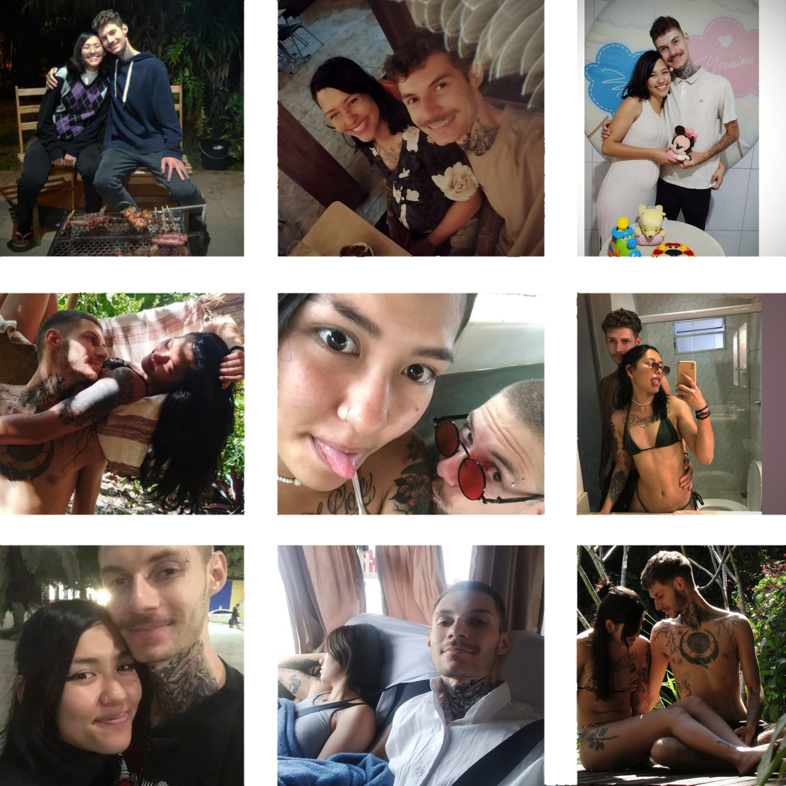

“…Às vezes, o destino nos chama para caminhos inesperados…”
Você já parou para pensar em como cada encontro muda o rumo da nossa vida?
Alguns segredos estão reservados apenas para almas que ousam descobrir…
A jornada mais linda da vida… começa com um passo inesperado.
Entre todos os universos possíveis… que sorte a minha viver este ao seu lado.
Se você sentiu algo especial até aqui… talvez haja mais esperando

Cada lembrança, um capítulo do nosso livro.

Cada sorriso, cada gesto… guardados para sempre.
Agora, só falta uma pergunta ser respondida.